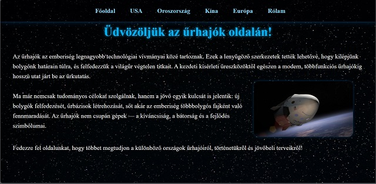
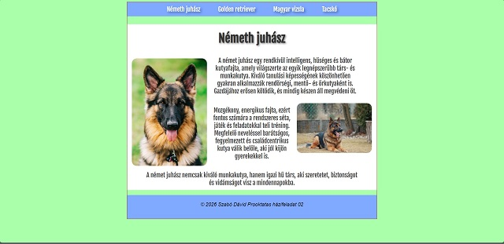
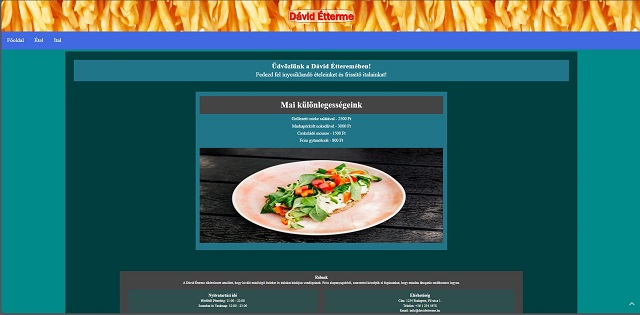
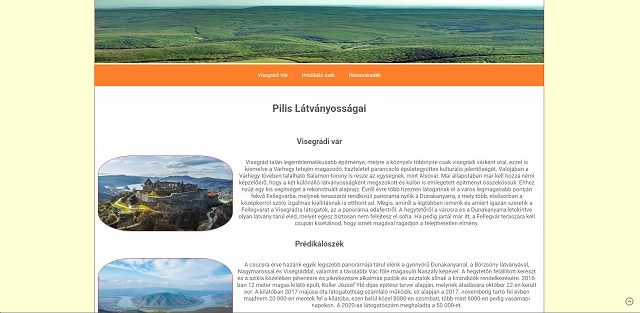
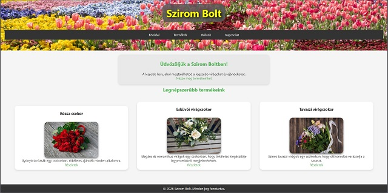
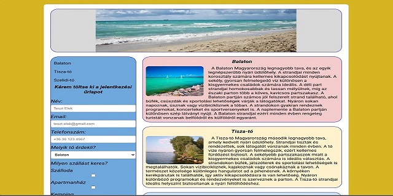

Az első önálló házifeladat
Hozz létre legalább 1 html oldalból álló weboldalt, tetszőleges témában a jelenlegi tudásod szerint. Az oldal struktúrája egyszerű, tartalmaz egy fejlécet, egy navigációs menüt és egy fő tartalmi részt. A stílusokat CSS segítségével adtam meg, hogy az oldal esztétikus és könnyen olvasható legyen.
Második házifeladat Leírás alapján
Készíts egy HTML oldalt, amiben a tartalom az oldal közepén található, az oldal 50%-át foglalja el és van egy folytonos vonalú, 1px-es barna kerete. A felső részén legyen egy vízszintes menüsáv, amelyben négy menüpont található (4 kutyafajta legyen). Alatta legyen a tartalmi rész, amiben egy címsor (kutya fajtájának a neve), az aktuális kutyafajta képe és egy rövid leírás legyen.
- Az oldal háttérszíne: # AAFFAA.
- A menü háttérszíne: 127, 170, 255.
- A menügombok betűi legyenek fehérek. Ha fölé megyünk az egérrel, akkor változzon feketére.
- A tartalmi rész hátterének a színe legyen fehér, a betűk színe legyen: #333.
A tartalmi részben a címet, a képet és a leírást arányosan oszd el. Használd a margin és padding tulajdonságokat.
Harmadik önnáló házifeladat
Készíts 2 aloldalas weblapot (Főoldal + 2 aloldal), szabadon választott témában. A tartalom oldalanként legyen legalább 500 szó. Minden oldalon legyen kép is. Legyen legalább 1 oldalon többoszlopos rész az oldalon.
Negyedik házifeladat leírás alapján
Készíts egy HTML oldalt, amiben a tartalom az oldal közepén található, az oldal 70%-át foglalja el és 2px-es, barna, folytonos kerete van. Ebben a ’dobozban’ legyen négy rész. A felső részén legyen egy vízszintes sáv (fejléc), amelyben egy tetszőleges tájkép van a Pilisről. A következő legyen egy vízszintes menü, amelyben három, a Pilisben található turista látványosság neve legyen, amelyek könyvjelzők legyenek a tartalmi részben lévő leíráshoz. Alatta lévő tartalmi részben a turista látványosság neve egy ’h2’-es címsorban. Majd lejjebb következzen egy kép és leírás a turista helyről, a kép 30% széles legyen, balról legyen körül folyatva a leírással és legyen 10px-es margója a szöveg felöl.
A láblécbe helyezz el egy Google térképet, amelyen Dobogókő található. A térkép a lábléc teljes szélességét foglalja el és 200px magas legyen.
- Egyéb oldal paraméterek:
- Az oldalon ROBOTO betűtípust használj (Google fonts)
- Az oldal háttérszíne: #FFFFD4.
- A menü háttérszín: #FF7F2A, betűszín: fehér
- A menügombok ha fölé megyünk az egérrel, akkor változzon a link háttere #BF153F színűre.
- A tartalmi rész hátterének a színe legyen fehér, a betűk színe legyen: #555.
A tartalmi részben a címet, a képet és a leírást arányosan oszd el. Használd a margin és padding tulajdonságokat.
Ötödik házifeladat önálló alapján
Készíts tesztőleg témájú weboldalt. 1 Főoldal 1 aloldal minimum.
Védd le az oldalt jelszóval .htaccess fájl segítségvel. A jelszó legyen: prooktatas26
Legalább két elemre helyezz el animációt az animate.css segítségvel.
https://animate.style/
FTP-n töltsd fel a mai órán kreált domainedre!
Hatodik házifeladat leírás alapján
6. Házi feladat Készíts egy HTML oldalt, amiben a tartalom az oldal közepén található, az oldal 80%-át foglalja el és 2px-es, #ddd színű kerete legyen. Az oldal háttérszíne D7B520 legyen. A tartalmi rész a következő ábra szerint legyen felosztva:
Az oldalon a HTML5 elemeit használd! Az ábra szerint legyenek az elemek elhelyezve. A színeket „lopd le”. Minden rész lekerekített és van kerete is! Az oldalsáv 30% széles legyen. (Használj arányos margót és paddinget!) A fejlécbe egy tetszőlegesen választott „strandolós” képet tegyél. Az oldalsávba felül legyen egy menü, amelyekben könyvjelzők legyenek az egyes szekciókra.
A menü alatt legyen egy űrlap az alábbi tartalommal: „Kérem töltse ki a jelentkezési űrlapot” Készítsen egy űrlapot a következő mezőkkel:
- Név
- E-mail cím
- Telefonszám
- Melyik tó érdekli?: Balaton / Tisza-tó / Szelidi-tó (választható legyen, legördülős)
- Milyen szállást keres? szálloda / apartmanház / kemping (választható legyen több is)?
- Milyen ellátás legyen? teljes / fél panzió / csak reggeli / nem kérek ellátást (csak egyet lehessen választani)
- Egyéb üzenet (szövegmező)
- Elküld gomb (Mehet felirattal.)
Az űrlap elemeinek olyan szélességet válassz, hogy elférjenek az oldalsó sávba!
Az űrlap elemeinek olyan szélességet válassz, hogy elférjenek az oldalsó sávba! A szekciókba legyen egy kép és egy leírás. A kép legyen körbe folyatva a szöveggel. Az első szekcióba a Balatonról, a másodikba a Tisza-tóról, a harmadikba a Szelidi-tóról legyen anyag (8-10 mondat). Az oldalon 16 px-es, Roboto betűtípust használj (Google fonts). A tartalmi rész háttérszíne: #fff. A különböző szekcióba használj megfelelő kontrasztú betűszíneket! A címke dőlt betűs legyen és 1.2-szerese az alapértelmezettnek. A címke a szöveges mezők fölött legyen.
instrukciók az űrlap mezőkhöz: o határozd meg a kötelező mezőket, és méretüket o a beviteli mezőknek legyen neve és ’id’-ja o maximális hossza a beviteli mező tartalmának: o Ahol lehet, használj magyarázó szöveget. A layoutot tedd reszponzívvá úgy, hogy az elemek egymás után jöjjenek és menüsáv legyen vízszintes! A megoldást töltsd fel a felhasználónév.github.io címedre.